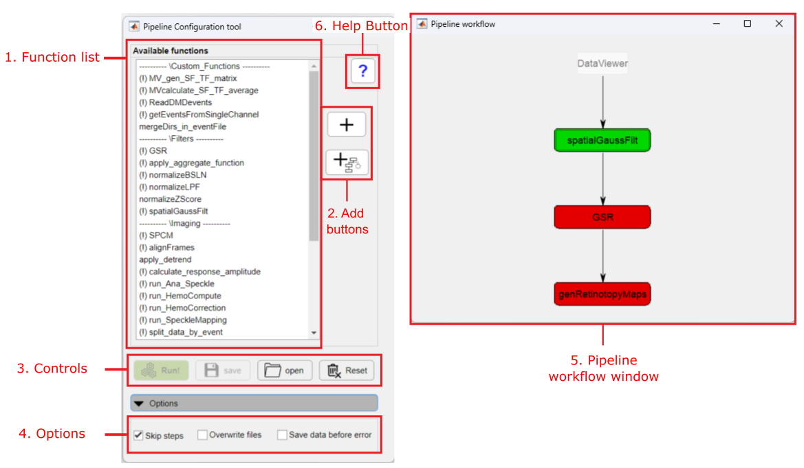
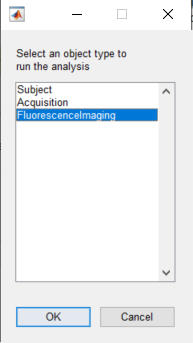

Example of analysis workflow. We will use it to create an analysis pipeline in the Pipeline Configuration tool
The pipeline configuration tool provides an graphical inteface to create, edit, save and load analyisis pipelines. The tool is accessed from both the umIToolbox and DataViewer apps.

Main components of the Pipeline configuration tool
List of available analysis functions separated by category. Functions with an exclamation point (!) have customizable parameters.
Note
Some of the analysis functions may not be available when the pipeline is called from DataViewer app as standalone. All existing functions are available when using the umIToolbox app. Check this list to learn which functions are available in DataViewer.
The list of analysis functions (pipeline) to be executed on the selected data. Here, the functions are executed sequentially from the top to the bottom of the list.
Click on a function from the pipeline(2) to access the control options.
Here are the steps to create a new pipeline. As an example, we will create our analysis pipeline based on the workflow shown in our tutorial on how to create functional cortical maps in the mouse. Here is the workflow:
Example of analysis workflow. We will use it to create an analysis pipeline in the Pipeline Configuration tool
Note
When launching the Pipeline configuration tool from the umIToolbox app, you will be asked to select an object type to perform the analysis on. In brief, object types refer to the classes that store the information about a Subject, Acquisition or a Modality. Check our introduction page to an overview on the conceptual organization that umIT is based on.
In the current example, we the select objects are from the modality FluorescenceImaging, which stores the information about optical imaging recordings:
To create a new pipeline:
Steps to create the analysis pipeline based on the workflow depicted in the previous figure.
Note
In cases, where the pipeline starts with a function that needs a file as input, a prompt window will appear while saving or applying the pipeline so you can choose the file.
One can use the Save to and Load from file... buttons to save a pipeline and load it for later use. First, create a new pipeline (steps 1 to 4 from the previous section) and click on Save to file... button. Finally, type the name of the file and select its location. To load a pipeline .JSON file, click on Load from file... button and select the file.
Example on how to save to and load from a pipeline .JSON file
Note
If the Pipeline configuration tool is called from the umIToolbox app, the pipeline files will be stored automatically inside the project's save directory in a folder named PipeLineConfigFiles (see example above).